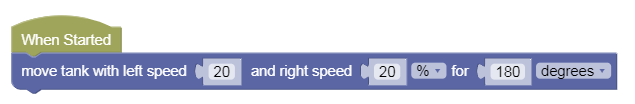

Movement Sequences
Let's test our Tank Movement blocks in Sequential programs.
Basic Test
-
Load this challenge
-
Click on Simulator Tab to see Challenge
NO JOYSTICK!
Statements
The fundamental unit of a code is an execution statement.
Do this.
Do that.
When we program a bunch of these statements one after the other, the hub will execute them in the same order.
This is called a sequence, meaning one statement follows another.
Sequences
Let's try some simple code sequences.
Algorithmic Thinking - in the above challenge, let's make the robot move forward 3 times:
- Move Forward 1 Rotation
- Move Forward 1 Rotation
-
Move Forward 1 Rotation
-
Follow instructions and take a screenshot of the special Completion Code!
Move Tank
Instead of 3 Move Forwards, can you do the above with just 1 Move Tank block?
How far is Move Tank moving forward? 1 Rotation
However far 1 rotation of the wheels gets you - which is the circumference of the wheel.
Tip: The bigger the wheel the further you'd go using 1 rotation...
Also, 1 Rotation = 360 degrees
If you want to go less than 1 rotation, change the distance unit to degrees.
For instance, to go half as far, use 180 degrees.
If you know your fractions and decimals, 180 degree is 0.5, or half of a full rotation.

Challenge
- Try to write a simple program that make the robot go back and forth, back and forth severl times - what should we call this dance move?